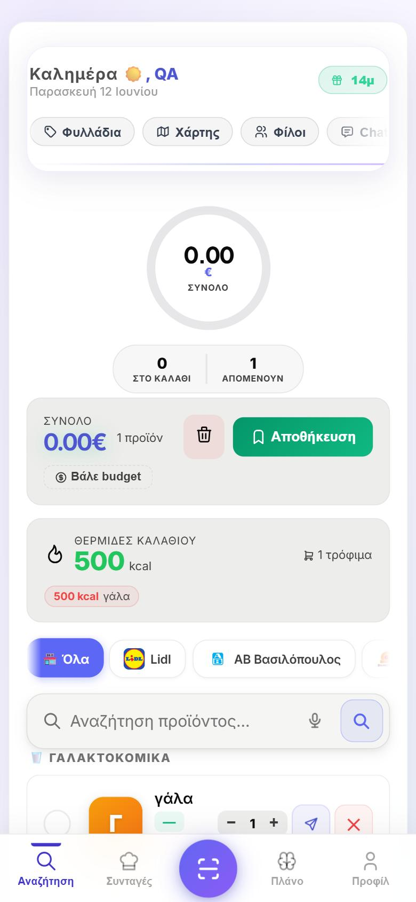
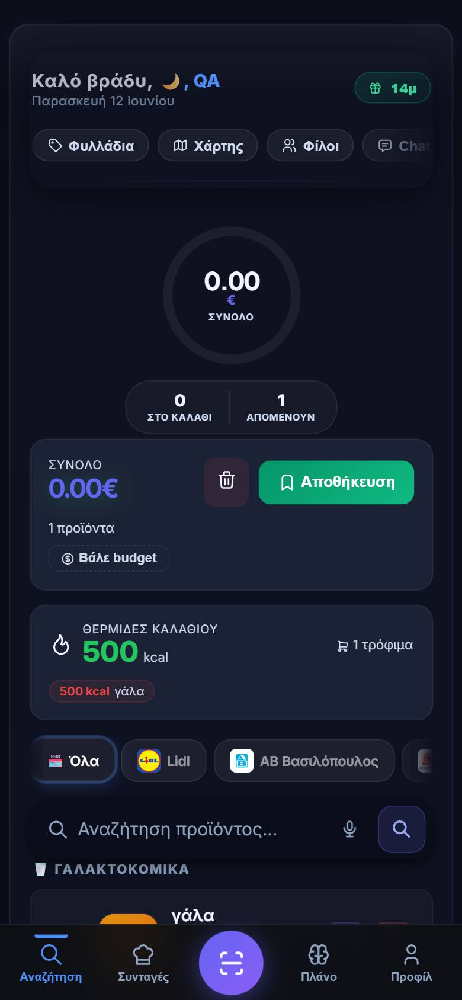
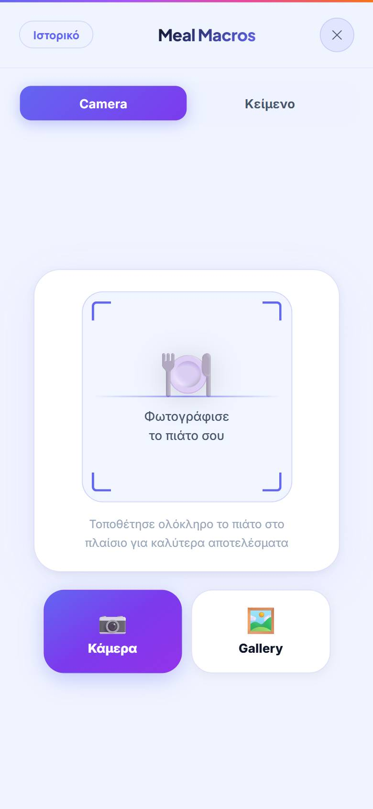

A full-stack PWA and Android app that compares live prices across 8 Greek supermarket chains — with an AI meal planner, barcode scanning, real-time shared carts and Stripe subscriptions.
Open the live app ↗Grocery prices in Greece vary noticeably between chains, and shoppers have no practical way to compare them: each supermarket publishes prices only inside its own site or leaflet, in different formats, with different product names for the same item. Checking even a 10-item list across Lidl, ΑΒ, Σκλαβενίτης, MyMarket, Μασούτης, Κρητικός, Γαλαξίας and Market In means opening eight websites.
Καλαθάκι turns that into one search box — type a product, see the live price everywhere, build a list, and let the app tell you where your basket is cheapest.



React 19 + Vite SPA with code splitting, Workbox service worker for offline caching and auto-update, Framer Motion micro-interactions, packaged for Android with Capacitor.
Express + MongoDB API. Puppeteer scrapers keep prices fresh per chain; AI providers power the meal planner and photo macro analysis.
Socket.IO channels for shared carts and chat — edits from any member appear instantly on everyone's list.
Leaflet + OSRM + Overpass for nearby stores and optimal routes with zero Google fees; Stripe Checkout for Premium with a 14-day free trial.
Scraping 8 different storefronts, reliably. Every chain has its own markup, pagination and bot detection. The scrapers run on Puppeteer with anti-bot countermeasures and are monitored so that a silent HTML change in one store doesn't quietly corrupt prices.
Matching the same product across chains. "Γάλα 3.5% 1L" is spelled eight different ways. Matching combines normalized names, package sizes and barcodes so the comparison is honest — a wrong match is worse than no match.
Real-time collaboration that survives mobile networks. Shared carts must reconcile edits from multiple phones on flaky connections; Socket.IO events are idempotent and the list state re-syncs on every reconnect.
Keeping the free tier free. Maps use OSRM/Overpass instead of paid APIs, hosting fits Vercel + Render free plans, and Premium (Stripe) covers what actually costs money — the AI features.